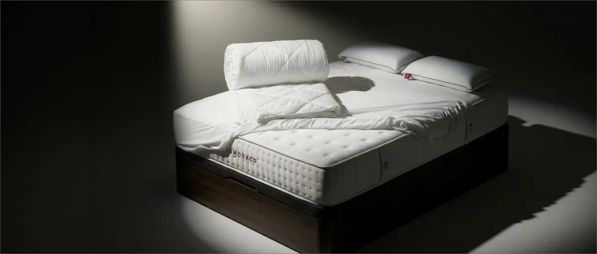
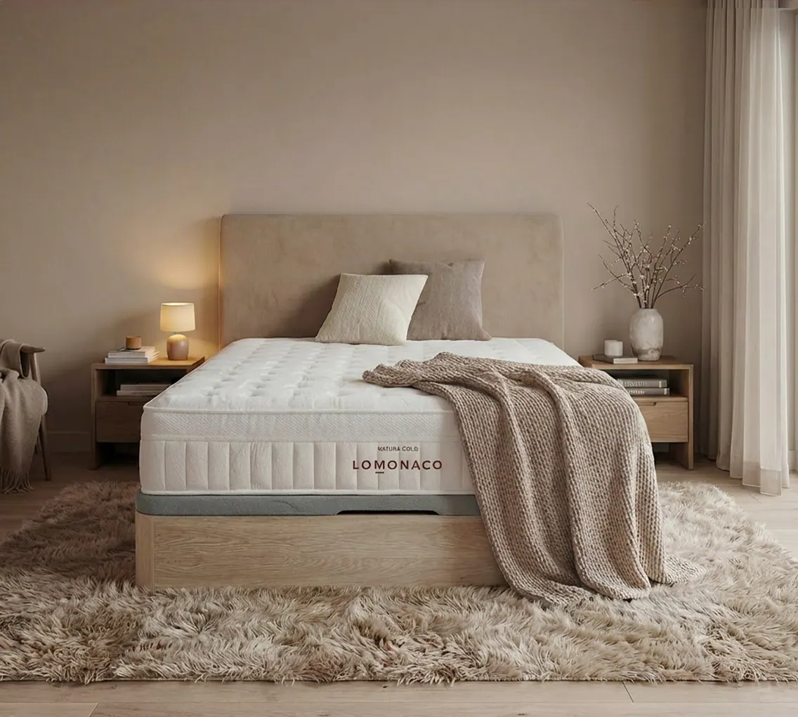

¿Cuándo es más barato comprar un colchón? Black Friday, rebajas y otras fechas
Un colchón dura muchos años, así que es lógico querer comprarlo al mejor precio. En esta guía te contamos en qué fechas suele estar más barato, si merece la pena esperar al Black Friday y cómo comprobar que un descuento es real antes de comprar.
Respuesta rápida
Las fechas con los descuentos más fuertes del año son:
- Black Friday: el día oficial es el viernes 27 de noviembre de 2026, pero en colchones las ofertas se adelantan y suelen durar todo noviembre. En LOMONACO ya están activas, con el mismo descuento todo el mes.
- Rebajas de invierno: tradicionalmente desde el 7 de enero.
- Rebajas de verano: tradicionalmente desde el 1 de julio.
Pero en colchones casi siempre hay alguna oferta: más que el porcentaje, compara el precio final del mismo modelo y la misma medida.
¿Cuándo es más barato comprar un colchón?
En Black Friday, a finales de noviembre, y en las rebajas de enero y de julio. Son los momentos en los que las tiendas de descanso aplican sus descuentos más altos. El resto del año también hay promociones puntuales y packs que salen más a cuenta que comprar las piezas por separado.
| Momento | Cuándo | Qué esperar |
|---|---|---|
| Black Friday | Todo noviembre en el sector del descanso (el día oficial es el viernes 27 y el Cyber Monday, el lunes 30) | Los descuentos más altos del año. Si el descuento es el mismo todo el mes, comprar pronto te da el mismo precio y la entrega antes |
| Rebajas de invierno | Tradicionalmente desde el 7 de enero | Buenos precios en colchones, almohadas y ropa de cama tras las fiestas |
| Rebajas de verano | Tradicionalmente desde el 1 de julio | Buen momento si buscas un colchón fresco antes del calor fuerte |
| Resto del año | Promociones puntuales | Packs de colchón y base con regalos, y financiación sin intereses |
Desde 2012 cada comercio puede fijar sus propias fechas de rebajas, así que las fechas exactas cambian de una tienda a otra.
¿Merece la pena esperar al Black Friday?
En noviembre, no hace falta esperar al viernes 27. En el sector del descanso el Black Friday se adelanta y dura todo el mes, y en LOMONACO el descuento es el mismo desde el primer día hasta el último, también la semana del Black Friday. Comprar a principios de mes te da el mismo precio y la entrega antes. Fuera de noviembre, solo merece la pena esperar a una campaña si tu colchón todavía te deja descansar.
Puedes esperar a la próxima campaña si…
- Tu colchón aún está en buen estado
- Quieres renovar colchón y base a la vez
- Ya sabes qué modelo y qué medida necesitas
No esperes si…
- Te levantas con dolor de espalda
- El colchón está hundido o hace ruido
- Tiene más de diez años
- Lo necesitas para una mudanza o una cama nueva
En LOMONACO el Black Friday de 2026 ya está activo y dura todo noviembre, con el mismo descuento todo el mes: no va a bajar más la semana del Black Friday ni el día 27. Puedes ver todos los colchones con el descuento ya aplicado.

¿Cómo saber si un descuento es real?
Comprueba que el precio tachado es el más bajo que ha tenido el producto en los 30 días anteriores: es lo que exige la ley en España cuando se anuncia una rebaja. Y compara siempre el mismo modelo, la misma medida y el precio final con envío, montaje y retirada incluidos.
En el sector del descanso los porcentajes de descuento son muy altos casi todo el año, así que el porcentaje por sí solo dice poco. Fíjate en estas cuatro cosas:
- El precio anteriorLa Ley de Ordenación del Comercio Minorista obliga a que, en una rebaja, el precio de referencia sea el más bajo aplicado en los 30 días previos. Si lo sigues unas semanas antes, sabrás si la rebaja es de verdad.
- El mismo colchónCompara el mismo modelo, la misma medida y la misma composición. Un colchón «parecido» a mitad de precio puede tener un núcleo o unas capas muy distintas.
- El precio finalSuma el envío, el montaje de la base y la retirada del colchón antiguo. Un precio bajo con todo eso cobrado aparte puede salir más caro.
- Lo que va incluidoEn los packs, mira qué viene de regalo. En nuestros packs de colchón y canapé de Natura Gold, Natura Látex y Gran Natura, las almohadas, el protector y el edredón van incluidos sin pagar más que el colchón y el canapé.
¿Qué mirar además del precio?
La prueba en casa, la garantía, el envío y el montaje, la retirada del colchón viejo y la financiación. Son las condiciones que hacen que una compra barata sea también una compra segura, y deberían ser las mismas en Black Friday que el resto del año.
- 14noches de prueba en casa: si no es para ti, lo recogemos
- 10años de garantía en todos nuestros colchones
- 0 %de interés si lo pagas en 12 meses
- Prueba en casaUn colchón no se puede probar bien en cinco minutos en una tienda. Con nuestras 14 noches de prueba lo compruebas durmiendo en él, también si lo compras en oferta.
- GarantíaTodos nuestros colchones tienen 10 años de garantía, compres en la fecha que compres.
- Envío y montajeEl envío es gratis y, si compras canapé o base, te la llevamos y te la montamos.
- Retirada del antiguoAl hacer el pedido puedes añadir el servicio de recogida de tu colchón y tu base antiguos.
- FinanciaciónCon nuestros colchones financiados puedes pagar hasta en 36 cuotas, o en 12 meses sin intereses, también con los precios rebajados.
Cómo preparar la compra para acertar
Decide la medida, la firmeza y si vas a cambiar también la base antes de comparar ofertas. Así solo tendrás que comparar precios del mismo modelo. Y si compras canapé, no lo dejes para el final de la campaña: tarda más que el colchón en llegar porque se entrega montado.
- Mide tu camaAncho y largo de la base actual. Si vas a cambiar de medida, piensa en el espacio del dormitorio. Tienes todas las medidas en nuestra categoría de colchones.
- Elige la firmezaDepende de tu peso y de cómo duermes. Nuestra guía sobre la firmeza del colchón te lo resume en una tabla.
- Decide si cambias la baseSi tu base tiene más de ocho o diez años, cambia las dos piezas a la vez. Te lo explicamos en nuestra guía para combinar colchón y canapé.
- Calcula los plazosSi el descuento es el mismo todo noviembre, comprar al principio de la campaña te asegura estrenarlo antes de Navidad, sobre todo si incluye canapé.
- Resuelve las dudas antesLlama a un Asesor del Descanso: te ayuda a decidir y sabrás exactamente qué pedir.

Colchones
- Viscoelásticos, de látex y de muelles ensacados
- 12 medidas y 14 noches de prueba

Packs colchón y canapé
- El equipo completo en una sola entrega
- Almohadas, protector y edredón según el pack
Prepara tu compra con un Asesor del Descanso
Cuéntanos tu peso, cómo duermes y la medida de tu cama, y te decimos qué colchón te conviene para aprovechar el Black Friday. Es gratis y sin compromiso.
Hablar con un asesorVer colchonesNuestra recomendación
En noviembre no esperes al viernes 27: en LOMONACO el Black Friday dura todo el mes con el mismo descuento, así que comprar ahora te da el mismo precio y más margen para la entrega. Fuera de campaña, si tu colchón aún aguanta, espera a las rebajas, pero llega con los deberes hechos: medida, firmeza y si cambias la base. Compara el precio final del mismo modelo, no el porcentaje, y fíjate en que se mantengan la prueba en casa, la garantía y la financiación. Si ya duermes mal, no esperes: compra ahora con 14 noches de prueba.
Preguntas frecuentes sobre cuándo comprar un colchón
¿Cuándo es el Black Friday de 2026?
El viernes 27 de noviembre de 2026, y el Cyber Monday, el lunes 30. En colchones las ofertas se adelantan: en LOMONACO el Black Friday dura todo noviembre.
¿Bajan más los precios el día del Black Friday?
En LOMONACO, no. El descuento es el mismo durante todo noviembre, también la semana del Black Friday y el viernes 27. Si compras antes, pagas lo mismo y recibes el pedido antes.
¿Es buena idea comprar un colchón en Black Friday?
Sí, si ya sabes qué modelo y qué medida necesitas y comparas el precio final del mismo colchón. Es una de las fechas con descuentos más altos del año. Comprueba que se mantienen la prueba en casa, la garantía y la financiación.
¿Cuándo son las rebajas de colchones?
Tradicionalmente, las rebajas de invierno empiezan el 7 de enero y las de verano el 1 de julio. Desde 2012 cada tienda puede elegir sus fechas, así que pueden adelantarse o alargarse.
¿Puedo devolver un colchón comprado en Black Friday?
En LOMONACO, sí. Los colchones en oferta tienen las mismas 14 noches de prueba que el resto del año: si no es para ti, lo recogemos.
¿Se puede financiar un colchón en oferta?
Sí. Puedes pagar el colchón rebajado hasta en 36 cuotas o en 12 meses sin intereses, igual que el resto del año.
Elige tu colchón por medida
Colchón 90×190 Colchón 90×200 Colchón 105×190 Colchón 105×200 Colchón 135×180 Colchón 135×190 Colchón 140×200 Colchón 150×190 Colchón 150×200 Colchón 160×200 Colchón 180×200 Colchón 200×200
Completa tu cama
Canapé abatible Almohadas Protector de colchón impermeable Edredón nórdico
Fuentes
- Ley 7/1996, de 15 de enero, de Ordenación del Comercio Minorista, artículo 20 (reducción de precios), en su redacción vigente. BOE
- Condiciones de venta, garantía, prueba en casa y financiación de LOMONACO (consultadas el 5 de noviembre de 2026).
- Experiencia del equipo de Asesores del Descanso de LOMONACO con las consultas durante las campañas de Black Friday y rebajas.